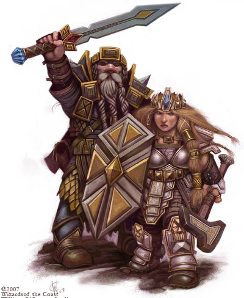
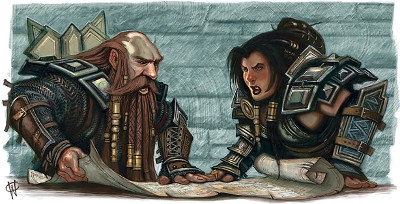
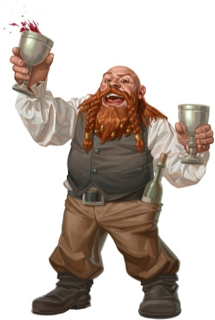

Culture naine
Moradin, le Forgeur d'Âmes, le Créateur, a forgé les premiers nains à base de métal et de gemmes. Découvrons ce peuple qui place la tradition avant tout.
Les étapes de la vie
Les nains ont une espérance de vie de 400 ans mais, contrairement à d'autres races comme les humains ou les orcs, les nains se reproduisent lentement. En effet, la majorité des familles n'ont qu'un ou deux enfants, ce qui est considéré comme une vertu car de cette manière les parents peuvent leur apporter une attention particulière et leur donner une meilleure éducation que s'ils avaient de nombreux frères et sœurs.
Enfance
Les nains vieillissent au même rythme que les humains. On apprend aux enfants à parler tout en leur racontant les traditions naines et l'histoire de leur clan et de la forteresse où ils vivent. Durant la journée, lorsque les parents travaillent, les enfants sont rassemblés dans des sortes de crèches, ce qui leur permet à la fois de se socialiser et de découvrir l'artisanat pratiqué par le clan en jouant tantôt avec des pièces d'armures tantôt avec de la pâte à pain, suivant les cas. Passé leur quinzième année, une éducation plus formelle leur est donnée : 8 heures par jour, on leur enseigne le langage écrit, les runes, l'histoire locale, ainsi que les fondements et la base de l'artisanat du clan.
Adolescence
Le jour des 25 ans d'un nain marque son passage à l'âge de l'apprentissage. Tout le clan est réuni comme témoin de cet événement dont le point culminant est le moment où les parents confient leur enfant au maître de la guilde du clan : son apprentissage peut alors commencer. Hommes ou femmes, tous suivront le même parcours, aucune différence ne sera faite. Le jeune nain ira dans un dortoir commun et ne pourra revenir chez lui qu'un seul jour par semaine. Cet apprentissage dure 25 ans, au terme desquels une cérémonie est donnée pour marquer le passage du nain à l'âge adulte, à ses 50 ans, avec l'acceptation des nouvelles responsabilités que cela induit.
Âge adulte
Les nains adultes, hommes ou femmes, travaillent généralement 12 heures par jour. S'ils ont un enfant, la durée de travail quotidienne n'est que de 8 heures afin qu'ils puissent passer plus de temps avec leur progéniture. Au sein d'un clan, chaque nain rempli une fonction bien précise selon trois catégories : le soutien à la communauté (brasseurs, cuisiniers), les créateurs (ceux qui travaillent à la forge, les tailleurs de gemmes, les sculpteurs) et ceux qui sont en contact avec le monde extérieur (marchands, guerriers, émissaires).
Les clans
Chez les nains, la famille désigne les membres issus de la même lignée directe, ce qui inclut les grand-parents, leurs enfants et les enfants de ceux-ci. Mais la plus importante unité de la société naine est le clan, composé de deux à plus d'une centaine de familles selon sa force et qui est dirigé par un roi ou par une reine. Chaque clan maintient une forteresse. Toutes les familles d'un même clan sont unies par les liens du sang car elles partagent le lignage d'un ancêtre commun, ce qui signifie que tous les nains d'un clan seront les oncles, tantes, neveux ou cousins d'un membre.
Un clan est généralement spécialisé dans un métier ou une compétence particulière (la forge, la mine, la fabrication d'armes, etc). Des guildes légifèrent toutes les questions liées au commerce, définissant les poids et les mesures, la qualité et le prix des objets, au sein du clan et entre clans. Elles n'ont en revanche aucun contrôle sur le plan politique ; cette tâche est laissée aux nobles et aux prêtres. Si, fait rare, un nain quitte son clan d'origine, il doit jurer de ne jamais en révéler les secrets. Les liens avec sa famille immédiate resteront toutefois forts et un nain sait qu'il pourra toujours leur demander de l'aide en cas de problème. S'il est attaqué ou insulté, ses frères et ses sœurs viendront rapidement l'épauler, comme le feront les membres de son nouveau clan d'ailleurs. Insulter un nain c'est en fait insulter tous les nains.
Un nain malade ou blessé sera nourri et soigné par son clan, et on attend de ceux en bonne santé qu'ils travaillent afin de maintenir le bien-être et la réputation du clan. Aucun nain n'agira jamais différemment. Celui qui triche ou ne donne pas le maximum gagne à coup sûr la désapprobation de ses compagnons. On l'avertira et on lui mettra la pression pour s'assurer qu'il ne déshonorera pas le nom du clan. S'il ne fait pas attention aux avertissements, il sera mis au ban et perdra alors tous les avantages que donne le clan. Sa guilde lui interdira de travailler et lui confisquera tous ses outils si cela est possible. S'il le fautif exprime alors le désir de réparer ses fautes, il lui sera permis de revenir dans le clan et la guilde lèvera l'interdiction. Sinon, il sera livré à lui-même et même sa famille le rejettera.
Pour un étranger, le fonctionnement des clans nains peut sembler complexe, et c'est une réalité, mais les nains ne pourraient vivre autrement. Ils connaissent les priorités en matière de loyauté : d'abord la famille, puis leur clan et leur forteresse, puis toute autre forteresse naine à laquelle le clan est allié. Les nains sont une race fière, ils respectent leur parole et sont disposés à se défendre souvent jusqu'à la mort.
Caractère
Les nains ne sont pas des humains aux jambes courtes, aux larges torses et aux longues barbes, mais bien une race à part entière, avec leurs propres traits de personnalité et leurs propres croyances. C'est aussi une race fière et noble qui n'en fait qu'à sa tête. Non pas parce qu'ils sont têtus, mais parce que l'histoire leur a enseignés que leurs méthodes sont les meilleures. Ils ne comprennent pas pourquoi les autres races les considèrent comme des créatures renfrognées et taciturnes, mais ils s'en fichent, ils se savent supérieurs aux autres. Si les autres races ne les reconnaissent pas comme ils sont en réalité, c'est leur problème, pas celui des nains.
Les nains ont développé un amour instinctif de la terre et de la pierre, qui représentent pour eux la stabilité et la permanence en opposition à la mer par exemple, changeante, mouvementée, impétueuse, mesquine, qui représente à leurs yeux la force du chaos répandue dans le monde du dessus. La terre et la roche peuvent être creusées, elles resteront toujours solides et fiables. Ce thème de la solidité et de la fiabilité est récurrent dans le monde nain et est étroitement lié à leur alignement loyal. La loi et l'ordre sont en effet des valeurs naines fondamentales, l'ordre étant pour eux indispensable à la survie du monde. La société se doit d'être aussi digne de confiance que la pierre et la terre. Durant la vie d'un nain les arbres meurent et les structures en bois moisissent. Les matières comme le bois ne sont donc pas synonymes de qualité, contrairement à la force et à la longévité du métal et de la roche.
Les nains vivent dans la discipline, le respect et la loyauté, car les lois sont le fondement d'une société organisée, prospère et stable. La société reflète l'ordre naturel du monde, chaque chose étant à sa place et devant y rester. Les lois existent pour être respectées, pas bafouées. Grâce à l'organisation de leur société, les nains se sentent en sécurité, protégés de l'envahisseur. Mais bien que la loi soit placée au-dessus de tout, les nains ont du mal à lutter contre leur nature individualiste. Ils ont leur point de vue personnel, qu'ils ne partagent que très rarement avec les autres (raison pour laquelle, d'ailleurs, ils sont perçus comme une race taciturne). Les nains n'aiment pas le faste et le luxe, du moins ils ne le montrent pas ouvertement aux étrangers, préférant accumuler de nombreuses richesses qu'ils gardent pour eux, les appréciant alors en connaisseur. Ceci est souvent mal vu par les étrangers, qui pour cela les qualifient souvent d'égoïstes. Mais pour les nains, les gemmes et les métaux précieux sont une richesse personnelle qu'ils ne dépenseront pas pour acheter autre chose. C'est une fin en soi (bien évidemment ils se servent tout de même de monnaie, cela va sans dire). Révéler à quelqu'un sa richesse en la lui faisant partager est une marque d'amitié. En agissant ainsi, les nains ne partagent pas seulement la joie de leur possession, mais aussi leur confiance. Les autres races, les elfes en particulier, trouvent cette attitude étrange, eux qui au contraire aiment afficher leurs richesses, permettant ainsi à tous d'admirer leur beauté. Aucun nain ne ferait une chose pareille sans avoir suffisamment confiance en la personne. Tout cela explique pourquoi les nains sont considérés comme cupides par les races qui ne peuvent comprendre leurs motivations.
Vivre sous terre
La plupart des nains vivent sous terre ; il est peu commun de les voir établis à l'air libre dans un environnement extérieur, à moins que les circonstances les y poussent. Et vivre sous terre durant des milliers d'années a nettement affecté leur perception du monde extérieur. Les nains pensent être la race dominante du monde, avoir la culture la plus riche et la plus belle des civilisations. Et cette attitude prévaut même lors de voyages dans des contrées où pourtant d'autres races prédominent. D'ailleurs, les nains qui vivent sous terre se préoccupent très peu de ce qui se passe à la surface, sauf si quelqu'un cherche à pénétrer dans leur territoire souterrain. Ils ne voient donc pas de raison de devoir communiquer avec les habitants de la surface. Ce nano-centrisme est profondément enraciné chez tous les nains, indépendamment d'où ils vivent.
Les nains ne se compromettent pas non plus avec les races mauvaises. Ils détestent par exemple les drows, les orcs, les gobelinoïdes et les géants. La haine des nains pour ces races est aussi vieille que leur origine, datant de l'époque des guerres menées afin de déterminer qui aurait le droit de vivre sous terre. Depuis, les nains nourrissent une haine brûlante et éternelle pour ces créatures, jurant de « mourir au champ d'honneur » pour combattre ces ennemis.
Émotions & Humour
En bon peuple renfermé, les nains ont souvent du mal à exprimer leurs émotions. Ils sont, il est vrai, élevés dans une société qui ne laisse pas vraiment de place à l'expression de la colère, de l'envie, de la jalousie ou encore de la haine. Ceci est sans doute dû à leur grande loyauté envers la hiérarchie. Ne pas leur donner le respect qu'ils exigent, plaisanter sur la qualité de leurs produits, voilà ce qui fâche les nains. Mais cette colère se montrera seulement par un air menaçant ou un froncement des rides du front, pas plus. Les nains renferment leur colère longtemps avant qu'elle n'éclate, ce qui est à l'origine de leur apparence grincheuse, taciturne et têtue.
Les nains sont donc souvent considérés comme sans humour et grincheux... et c'est en grande partie une réalité, car ils sont effectivement avares en plaisanteries. La société naine étant fondée sur la loi et le respect de ses camarades, un nain respecte ces valeurs. Il n'éprouvera pas de plaisir à ridiculiser la dignité d'une autre personne ou à faire des plaisanteries basées sur la douleur ou l'échec d'un individu. Les nains aiment travailler et c'est là qu'ils trouvent leur grand plaisir. Celui-ci est d'ailleurs si élevé qu'il suscite fréquemment la moquerie d'autres races, et cela les nains ont du mal à le supporter. Toutefois tout ceci ne veut pas dire que les nains sont complètement dénués d'humour, mais simplement que leur sens de l'humour est différent de celui des humains par exemple. Le problème des blagues naines est qu'elles suivent toutes le même modèle narratif. Les généalogies sans fin, les longues énumérations de parents nains, les soucis que chaque clan a connus, en font des histoires plus que longues auxquelles les autres races trouvent difficilement un quelconque intérêt. Les comédiens nains sont d'ailleurs souvent désabusés lorsque le public qui les écoute, composé de gens d'autres races, grogne d'impatience ou quitte le spectacle.
Mariage & Mort
Les nains sont monogames et les mariages, qui sont un rite sacré, durent toute la vie : seule la mort peut y mettre un terme. Le divorce n'existe pas dans la société naine. Mais la société naine a un problème : elle possède beaucoup plus d'hommes que de femmes. Ceci, couplé au fait que les nains ne sont de toutes façons pas des plus romantiques et des plus charmeurs (ils voient leur épouse avant tout comme des collaboratrices, des partenaires de travail), expliquent pourquoi beaucoup d'hommes ne se marient pas. Autre conséquence de ce déséquilibre : une femme qui perd son conjoint peut se remarier après une année de deuil ; un homme non.
Comme les humains et les autres races, les nains ont leur propre vision de la vie après la mort. La majorité des guerriers et les prêtres nains pensent qu'ils voyageront jusqu'à une sorte de panthéon des héros où ils attendront qu'on fasse appel à eux pour à nouveau combattre leurs ennemis. Les artisans nains, eux, attendent de la vie après la mort de pouvoir continuer à travailler assidûment. Seuls les plus pessimistes pensent qu'aucune vie n'existe après la mort.
L'alimentation
BIÈRES NAINES
Les puissantes et savoureuses bières naines sont presque aussi célèbres que leurs armes et leurs armures. En effet, tous les nains semblent partager un amour universel de la bonne bière, les plus fortes étant leurs préférées alors que pour les autres races la plus douce des bières naines est si puissante qu'elle est presque imbuvable. La majorité des nains commencent à boire à un âge précoce et il n'est pas rare lors des banquets de voir de jeunes nains attablés à côtés de leurs aînés, buvant avidement le contenu de choppes plus grosses que leur tête. L'amour de la bière est devenu une facette de la vie des nains presque aussi importante que les guerres contre leurs ennemis héréditaires, et de nombreux nains réduisent leur nervosité avant une bataille en ingurgitant plusieurs pintes de leur bière favorite. Mais ne vous y trompez pas : si un humain boit pour oublier, un nain boit pour se souvenir.
Chaque forteresse naine digne de ce nom possède au moins une brasserie. Les nains brassent des bières qui accentuent les saveurs de leurs plats favoris et qui, pour ceux qui voyagent loin de leur citadelle d'origine, leurs rappellent leur foyer. Elles possèdent par exemple des saveurs rustiques, réminiscence des âtres chauds, des viandes bien cuites et des plafonds tachés de suie. Les recettes, à l'image de leur société, restent inchangées et sont gardées secrètes. Des maîtres brasseurs passent d'ailleurs leur temps à la recherche des recettes de citadelles perdues ou de descriptions détaillées de leur goût dans l'espoir de pouvoir les recréer.
Les nains apprécient une large variété de nourriture, avec toutefois une préférence pour la viande (bovins, chèvres, moutons, cochons, volaille). Ils mangent également de grandes quantités de céréales comme le blé, le seigle et l'orge, qu'ils cultivent parfois eux-mêmes et gardent, après les moissons, dans des greniers souterrains. Mais la majorité des céréales consommées sont achetées directement aux humains ou aux halfelins. Les nains qui habitent dans les profondeurs remplacent les graines par les champignons, qui sont soigneusement cultivés et produisent une grande variété de goût. Enfin, la cuisine naine utilise beaucoup les légumes, pour le parfum et la variété. Les nains ne mangent généralement pas de nourriture épicée ou lourdement assaisonnée, ce qui vaut à la cuisine naine la réputation d'être douce, mais saine, comme ces ragoûts épais servis sur de larges tranches de pain. Bien qu'ils ne soient pas aussi voraces que les halfelins, peu d'humains ou d'elfes peuvent manger autant qu'un nain dans un seul repas.
Barbes & Vêtements
Les nains sont un peuple digne et ils tirent énormément de fierté de leur barbe (et brisons tout de suite un mythe : non, les femmes naines n'ont pas de barbe). La longueur de la barbe d'un individu indique son statut dans la société. La noblesse naine laisse pousser leurs barbes jusqu'à des longueurs extravagantes, tandis qu'une barbe plus courte indique un rang de guerrier ou d'artisan, métiers qui rend dangereux le port de longues barbes. Elles pourraient en effet facilement être saisies par un ennemi ou brûlées dans une forge, ce qui entraverait le travail des soldats comme des forgerons. Les nains riches ou nobles ont souvent l'aide des serviteurs pour tresser leur barbe en de complexes motifs et les orner d'or ou d'argent, tandis que les nains de faible statut social gardent leurs barbes relativement simples ou les décorent d'étain, de bronze ou de fer. De nombreuses coutumes anciennes imposent aux nains de porter leur barbe dans un style particulier lors de certaines occasions. Par exemple, un nain qui laisse pousser une barbe hirsute et qui ne l'entretient pas est en deuil d'un parent ou d'un ami proche, tandis qu'une barbe peignée en fourche et pourvue d'anneaux dorés à ses deux extrémités indique que le nain a entreprit de courtiser sa promise. Les nains de tout statut aiment décorer leur barbe d'anneaux métalliques et autres ornements, et l'une des décorations les plus populaires est le fermoir conçu pour empêcher les barbes de gêner les mouvements. Au-delà de leur signification sociale, un fermoir hautement décoré représente souvent un accomplissement individuel. Il peut aussi dévoiler la présence d'un nain célèbre sans qu'une présentation formelle ne soit nécessaire, particulièrement si le fermoir est fait de matériaux exotiques ou décoré de gemmes.
L'habillement des nains pour sa part est lourd et épais, sombre et utile. Fait à partir de laines épaisses, il est conçu pour maintenir les nains au chaud dans les endroits frais de leurs forteresses. Pour le non-initié, les couleurs sont des gris et des bruns uniformément ternes. Mais si on a l'œil avisé et connaisseur, les nuances particulières du gris et du brun des vêtements en disent beaucoup au sujet du clan et du statut des nains. La langue naine possède en effet plus de 500 mots pour désigner la roche, et presque autant pour décrire ses différentes tonalités. Les ceintures et les chapeaux sont habituellement faits en cuir à partir de bétail ou de lézards géants.
Musique & Chant
Les nains ne sont pas que susceptibles, cupides, taciturnes, obstinés, grincheux et dépourvus d'humour. Ils aiment chanter, en groupe de préférence. Leurs chansons parlent de la beauté de la terre, d'actes de bravoures mémorables, ou bien de la construction d'un pont ou autre édifice magnifique. Quelques-unes se lamentent sur la mort d'un aîné ou d'un grand héros, et d'autres rappellent la perte d'une forteresse tombée aux mains de monstres. Les chansons ont tendance à être longues, mais très bien écrites. On pourrait d'ailleurs facilement perdre patience si ces histoires étaient parlées, mais même les elfes écoutent ravis durant des heures les chansons naines. Les nains apprécient aussi de jouer des instruments de musique. Surtout les flûtes, les cornes, les cornemuses, les tambours et les percussions, mais rarement les instruments à cordes qui sont mal adaptés à leurs doigts courts. La musique est soit martiale, soit mélancolique. Des musiciens n'accompagnent que rarement des chanteurs : à un moment donné, c'est soit la musique, soit le chant.
Les richesses
La conception naine de la richesse est singulière : les nains sont attirés par la beauté naturelle des objets, pas par leur éventuelle valeur commerciale. L'or, par exemple, signifie beaucoup pour eux. Ils y accordent une grande importance, mais seulement pour sa beauté naturelle et son caractère facilement malléable. Dans les mains d'un maître forgeron, l'or peut être fondu et versé sous forme liquide dans des moules, battu avec un marteau, puis mêlé à de minces fils de soie incrustés soigneusement en filigrane, ou encore modelé au burin. Les objets en or sont donc très appréciés. Ceux qui ont été ratés, notamment à cause d'une mauvaise température de fonte de l'or ou à cause d'un geste malheureux de l'artisan, sont refondus pour servir de pièces de monnaie. Les nains sont toutefois bien conscients de la rareté de l'or et de sa valeur, il ne le brade jamais.

Les nains connaissent également bien la valeur des gemmes. Alors que d'autres races se contentent de les vendre grossièrement au kilo, les nains préfèrent les classer selon leur beauté, ce qui prouve une sensibilité naine particulière pour ce qui est de l'appréciation des pierres, qu'elles soient précieuses ou non. Ils n'ont cependant aucune fascination pour les perles sous-marines, produits de la mer, qui sont insignifiantes et sans attrait. Elles n'ont pas l'éclat profond des gemmes et n'ont donc pour eux aucune valeur.
L'or et les gemmes sont leurs deux plus grands amours, mais d'autres métaux sont aussi importants pour eux. Le platine possède plusieurs des attributs de l'or et est encore plus rare. L'argent est certes moins précieux, mais plus facile à travailler que l'or. Même si sa couleur en rebute quelques-uns, l'argent a donc son charme. Le cuivre et d'autres métaux sont également considérés comme beaux. Le minerai de fer est quant à lui crucial pour les nains, car c'est grâce à lui qu'on confectionne les armures, les armes et les outils. Les veines de minerai de fer sont d'ailleurs perçues par les nains comme les « os de la terre », légués aux nains pour qu'ils en fassent bon usage. Les nains, en forgeant le fer, peuvent le transformer en acier, plus solide et plus durable.
L'artisanat
Les nains sont de formidables artisans, non seulement en raison de leur compétence innée en la matière, mais surtout grâce à leurs apprentissages harassants qui, comme expliqué précédemment, durent 25 ans. « Un travail intéressant à faire vaut la peine qu'on le fasse bien » dit un dicton nain. Cette attitude invétérée explique pourquoi les nains aiment créer de beaux objets et passent autant de temps à les perfectionner. Ils cherchent à créer le métal parfait qui survivra jusqu'à la fin des temps et ont du mal à comprendre qu'on puisse considérer le travail comme une corvée plutôt que comme un acte d'expression artistique destiné à être savouré et apprécié. Les artisans nains, en raison de leurs qualifications, produisent armes, armures et autres marchandises plus rapidement que d'autres forgerons et de bien meilleure qualité. Mais ces marchandises, en raison de leur qualité justement, sont vendues à des prix plus élevés. Ils sont également perfectionnistes, comme ces forgerons nains qui refusent souvent d'arrêter leur travail avant d'avoir trouvé la combinaison parfaite entre forme et fonctionnalité. Les forges naines fonctionnent d'ailleurs toute la journée, tous les jours.
Les nains ont tendance à décorer leurs armes et leurs armures de motifs, religieux ou autres. Les marteaux de guerre et les haches d'armes représentent fréquemment des guerriers nains tuant des orcs, des gobelins ou autres ennemis de la race naine, et les armures naines ont tendance à avoir des motifs en relief représentants des ancêtres du clan ou des icônes de Moradin. Les fabricants d'armures espèrent ainsi accorder au porteur la bienveillance et la protection des ancêtres lors des batailles.
Traduit par Grisord